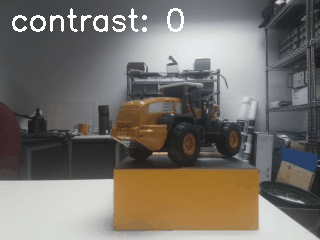
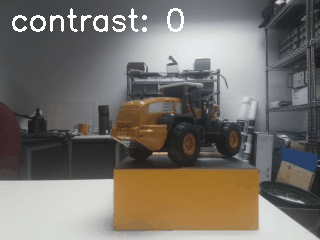

Introduction
This is where I perform experiments related to computer vision to refresh and deepen my understanding.
Hardware
For all of these experiements, we will used Rapberry Pi 4 and the Pi Camera 3 NoIR
Software
The default OS is Raspberry Pi OS, picamera and picamera2 should be installed on the Pi already, and you will need to install additional requirements (cv2, matplotlib, imageio), you can simply clone this repo and do:
!pip3 install -r requirements
Control Pi Camera
picamera and picamera2 actually provide LOTS of built-in functions that you could use easily. Let's try some basic settings as a normal camera including ISO, Brightness, Constrast, White Balance, Effects.
# Import libraries
import picamera, picamera2
import cv2
import imageio
import matplotlib.pyplot as plt
import numpy as np
import time
# Taking a picture and save it to a path
with picamera.PiCamera() as camera:
camera.shutter_speed = 6000000 # In microseconds, set the desired shutter speed
camera.iso = 800 # Set the desired ISO sensitivity
camera.brightness = 60
camera.contrast = 35
camera.exposure_mode = 'night'
camera.rotation = 180
camera.resolution = (320, 240)
camera.framerate = 10
time.sleep(2) # Give the cam secs to warm up
output = np.empty((240, 320, 3), dtype=np.uint8)
camera.capture(output, 'rgb') # Save to array in memory
image_path = './images/image1.jpg'
camera.capture(image_path) # Save to dir
plt.imshow(output)
plt.show
# There are other functions that you can play with, just try dir(camera) to print out the methods.
# Caputure normal camera and raw stream
with picamera.PiCamera() as camera:
camera.resolution = (320, 240)
camera.start_preview()
# Record a normal video
camera.start_recording('foo.h264')
time.sleep(5)
camera.stop_recording()
# Record a raw video
camera.start_recording('foo.raw', format='rgb')
time.sleep(5)
camera.stop_recording()
# As this point, we want to test multiple parameters with various settings
# Create a function to take arbitraty parameters and values them create a GIF image from that.
def capture_images_and_create_gif(camera, setting_name, setting_values):
images = []
# Save the original setting so we can reset it later
original_setting = getattr(camera, setting_name)
for value in setting_values:
# Set the camera setting
setattr(camera, setting_name, value)
# Wait for the automatic gain control to settle
time.sleep(2)
# Capture an image to a file
filename = 'image_{}_{}.jpg'.format(setting_name, value)
camera.capture(filename)
# Read the image using OpenCV
img = cv2.imread(filename)
# Add a caption to the image
cv2.putText(img, '{}: {}'.format(setting_name, value), (10, 30), cv2.FONT_HERSHEY_SIMPLEX, 1, (255, 255, 255), 2)
# Save the image
cv2.imwrite(filename, img)
images.append(imageio.imread(filename))
# Create a GIF
imageio.mimsave('{}_settings.gif'.format(setting_name), images, duration=1)
# Reset the camera setting to its original value
setattr(camera, setting_name, original_setting)
# Create a PiCamera object
with picamera.PiCamera() as camera:
# Set the resolution
camera.resolution = (320, 240)
camera.rotation = 180 # Rotate the image by 180 degrees
camera.exposure_mode = 'auto' # Set exposure to auto
# List of ISO settings to try
iso_settings = [100, 200, 300, 400, 500, 600, 700, 800, 900, 1000]
capture_images_and_create_gif(camera, 'iso', iso_settings)
# List of exposure modes to try
exposure_modes = ['auto', 'night', 'backlight', 'spotlight', 'sports', 'snow', 'antishake', 'verylong']
capture_images_and_create_gif(camera, 'exposure_mode', exposure_modes)
# List of white balance modes to try
wb_modes = ['auto', 'sunlight', 'cloudy', 'shade', 'fluorescent', 'incandescent', 'horizon']
capture_images_and_create_gif(camera, 'awb_mode', wb_modes)
# List of brightness settings to try
brightness_settings = [50, 55, 60, 65, 70, 75, 80, 85, 90, 95]
capture_images_and_create_gif(camera, 'brightness', brightness_settings)
# List of contrast settings to try
contrast_settings = [0, 10, 20, 30, 40, 50, 60, 70, 80, 90]
capture_images_and_create_gif(camera, 'contrast', contrast_settings)
# List of ROI settings to try
roi_settings = [(0.0, 0.0, 0.5, 0.5), (0.5, 0.0, 0.5, 0.5), (0.0, 0.5, 0.5, 0.5), (0.5, 0.5, 0.5, 0.5), (0.25, 0.25, 0.5, 0.5), (0.75, 0.25, 0.5, 0.5), (0.25, 0.75, 0.5, 0.5), (0.75, 0.75, 0.5, 0.5), (0.0, 0.0, 1.0, 1.0), (0.5, 0.5, 1.0, 1.0)]
capture_images_and_create_gif(camera, 'zoom', roi_settings)
# List of image effect settings to try
image_effects = ['none', 'negative', 'solarize', 'sketch', 'denoise', 'emboss', 'oilpaint', 'hatch', 'gpen', 'pastel', 'watercolor', 'film', 'blur', 'saturation', 'colorswap', 'washedout', 'posterise', 'colorpoint', 'colorbalance', 'cartoon']
capture_images_and_create_gif(camera, 'image_effect', image_effects)
 

Besides, picamera2 also provides many examples such as creating time lapse video or even running some machine learning models on it. Check it out here.
Camera Model & Calibration (to be updated)
To transform real world coordinates in to the image we have on camera, there are few steps
1. Transform world coordinates (X, Y, Z) to camera coordinates (x, y, z), the matrix we use is the combination of rotation and translation, this is called extrinsic matrix.
2. Transform camera coordinates to image coordinates, here is where the camera model and its parameter will decide how the camera coordinates were projected into 2D image. This is also where we have 3D information loss with normal, a light field camera however allows for the capture of 3D scene information, enabling a range of post-capture functionalities. This second transformation used a matrix called insintric matrix which is the combination of camera model and parameters.
Let's say you want to know how a random fisheye image look like in "normal view", what do you need?
This is actually quite crucial, as least when I was working with detection via CCTV camera, the performance of model on the normal fisheye image tend to be worst. Some could argue that you could train with fisheye images, but in reality the distorted subject from these images could even harm the mode.
In a normal camera, the distortion could be less obvious but still there such as perspective, barrel or pincushion. With an arbitrary camera, we can actually estimate the insintric matrix of the camera with a reference object that we know about it geometrically and checkerboard is the easiest. Technically, we will find the common points in each image and form an equation checkboard_image = camera_matrix * checkerboard_coors where camera_matrix is the unknown.
# Collect images from different view, you can set up time interval an move camera around the checkerboard
with picamera.PiCamera() as camera:
camera.resolution = (1280, 960)
camera.rotation = 180
camera.exposure_mode = 'auto' # Disable automatic exposure control
camera.iso = 0
# Give the camera some time to set its initial settings
time.sleep(2)
# Set the camera's shutter speed and give it some time to adjust
camera.shutter_speed = 10000
time.sleep(2)
# Capture 40 images with a time interval of 1 second
for i in range(0, 40, 1):
# Capture an image to a numpy array
output = np.empty((960, 1280, 3), dtype=np.uint8)
camera.capture(output, 'rgb')
# Save the image
image_path = './images/image{}.jpg'.format(i) # Replace with the desired path
camera.capture(image_path)
# Wait for 1 second before capturing the next image
time.sleep(2)
A mistake I made is to have some distortion on the checkboard, such as bending it or take too blurry images. These factors play a huge role in calibration, so try to capture clean and nice pictures.
# Draw checkboard corner, luckily most camera calibration functions are provided in OpenCV
checkerboard_size = (6, 9)
obj_points = [] # 3D points in real-world coordinate space
img_points = [] # 2D points in image plane
image_paths = glob.glob('./*.jpg') # Replace with the path to your images
for image_path in image_paths:
img = cv2.imread(image_path)
# img = np.rot90(img, 2)
# img = cv2.rotate(img, cv2.ROTATE_180)
gray = cv2.cvtColor(img, cv2.COLOR_BGR2GRAY)
# gray = np.rot90(gray, 2)
ret, corners = cv2.findChessboardCorners(gray, checkerboard_size, None)
if ret:
objp = np.zeros((checkerboard_size[0] * checkerboard_size[1], 3), np.float32)
objp[:, :2] = np.mgrid[0:checkerboard_size[0], 0:checkerboard_size[1]].T.reshape(-1, 2)
obj_points.append(objp)
img_points.append(corners)
# Visualize the detected corners (optional)
cv2.drawChessboardCorners(img, checkerboard_size, corners, ret)
# cv2.imshow('Chessboard', img)
plt.imshow(cv2.cvtColor(img, cv2.COLOR_BGR2RGB))
plt.axis('off')
plt.show()

# This calibration looks nice and easy but the there's lots of math behind it, from finding correspondance to solve the over-constraint equation. It return mtx which is 3x3 camera matrix and distortion parameters to represent the distrotion of the camera.
ret, mtx, dist, rvecs, tvecs = cv2.calibrateCamera(obj_points, img_points, gray.shape[::-1], None, None)
# Save camera matrix and distortion parameters in to npz
np.savez('calibration_params.npz', mtx=mtx, dist=dist)
# A trick from my professor to check if the camera matrix is right is to look on the right column, it should retun the center coordinates of the image size.
# Load the camera calibration parameters
calibration_data = np.load('calibration_params.npz')
mtx = calibration_data['mtx'] # Camera matrix
dist = calibration_data['dist'] # Distortion coefficients
# Load the image to be undistorted
image = cv2.imread('image28.jpg') # Replace with the path to your image
# image = cv2.rotate(image, cv2.ROTATE_180)
# Undistort the image
undistorted_image = cv2.undistort(image, mtx, dist, None, mtx)
# Display the original and undistorted images side by side
fig, axes = plt.subplots(1, 2, figsize=(20, 10))
axes[0].imshow(cv2.cvtColor(image, cv2.COLOR_BGR2RGB))
axes[0].set_title('Original Image')
axes[0].axis('off')
axes[1].imshow(cv2.cvtColor(undistorted_image, cv2.COLOR_BGR2RGB))
axes[1].set_title('Undistorted Image')
axes[1].axis('off')
plt.show()
Look better, right?
Just kidding, sometimes the distortion is subtle that we normally don't recognize it, let's add some sauce
# Define the grid size
grid_size = 50
# Draw a grid on the original image
image_with_grid = image.copy()
for i in range(0, image.shape[1], grid_size):
cv2.line(image_with_grid, (i, 0), (i, image.shape[0]), (0, 255, 0), 1)
for i in range(0, image.shape[0], grid_size):
cv2.line(image_with_grid, (0, i), (image.shape[1], i), (0, 255, 0), 1)
# Draw a grid on the undistorted image
undistorted_image_with_grid = undistorted_image.copy()
for i in range(0, undistorted_image.shape[1], grid_size):
cv2.line(undistorted_image_with_grid, (i, 0), (i, undistorted_image.shape[0]), (0, 255, 0), 1)
for i in range(0, undistorted_image.shape[0], grid_size):
cv2.line(undistorted_image_with_grid, (0, i), (undistorted_image.shape[1], i), (0, 255, 0), 1)
# Draw a red line on the original and undistorted images
cv2.line(image_with_grid, (grid_size*5, 0), (grid_size*7, grid_size*17), (0, 0, 255), 2)
cv2.line(image_with_grid, (grid_size*6, 0), (grid_size*8, grid_size*16), (0, 0, 255), 2)
cv2.line(undistorted_image_with_grid, (grid_size*5, 0), (grid_size*7, grid_size*17), (0, 0, 255), 2)
cv2.line(undistorted_image_with_grid, (grid_size*6, 0), (grid_size*8, grid_size*16), (0, 0, 255), 2)
# Display the original and undistorted images side by side
fig, axes = plt.subplots(1, 2, figsize=(20, 10))
axes[0].imshow(cv2.cvtColor(image_with_grid, cv2.COLOR_BGR2RGB))
axes[0].set_title('Original Image')
axes[0].axis('off')
axes[1].imshow(cv2.cvtColor(undistorted_image_with_grid, cv2.COLOR_BGR2RGB))
axes[1].set_title('Undistorted Image')
axes[1].axis('off')
plt.show()

In the original image, the door was bended slightly and after calibration we have it straightened, even the change is very small.
HDR Imaging (to be updated)
In general, creating High Dynamic Range (HDR) images involves a process of combining multiple images taken at different exposure levels to capture a greater range of luminosity than can be achieved with a standard camera in a single shot.
# Taking images at multiple exposures
# List of exposure speeds to use for bracketing
exposure_speeds = [2000, 5000, 1000000, 6000000]
# List to hold the images
images = []
with picamera.PiCamera() as camera:
camera.resolution = (320, 240)
camera.rotation = 180
camera.iso = 800
camera.exposure_mode = 'night' # Disable automatic exposure control
# Give the camera some time to set its initial settings
time.sleep(2)
for speed in exposure_speeds:
# Set the camera's shutter speed and give it some time to adjust
camera.shutter_speed = speed
time.sleep(2)
# Capture an image to a numpy array
output = np.empty((240, 320, 3), dtype=np.uint8)
camera.capture(output, 'rgb')
images.append(output)
# Create a grid of subplots
fig, axs = plt.subplots(2, len(exposure_speeds)//2, figsize=(20, 10))
# Display the images
for i, img in enumerate(images):
ax = axs[i//2, i%2] # Corrected indexing
ax.imshow(img)
ax.axis('off')
# Combine the images into an HDR image using different methods
average_image = np.average(images, axis=0)
weighted_average_image = np.average(images, axis=0, weights=exposure_speeds)
max_image = np.max(images, axis=0)
min_image = np.min(images, axis=0)
# Display the images side by side
fig, axs = plt.subplots(1, 4, figsize=(20, 5))
axs[0].imshow(average_image.astype(np.uint8))
axs[0].set_title('Average')
axs[1].imshow(weighted_average_image.astype(np.uint8))
axs[1].set_title('Weighted Average')
axs[2].imshow(max_image.astype(np.uint8))
axs[2].set_title('Max')
axs[3].imshow(min_image.astype(np.uint8))
axs[3].set_title('Min')
for ax in axs:
ax.axis('off')
plt.show()
Images of multiple exposures.
Naive merging methods, we can see that the average did a pretty good job, but in reality it will be better if you have many more images, you can see this HDR feature in iPhone camera.
In reality, HDR images can represent a greater range of luminance levels found in real-world scenes, from direct sunlight to faint starlight. However, our standard display devices (like monitors and TVs) and image formats are incapable of displaying such a wide dynamic range, which is where tone mapping comes into play.
# Estimate the camera's response function (CRF)
calibrate = cv2.createCalibrateDebevec()
response = calibrate.process(images, times=np.array(exposure_speeds, dtype=np.float32))
# Merge the images into an HDR linear image
merge = cv2.createMergeDebevec()
hdr = merge.process(images, times=np.array(exposure_speeds, dtype=np.float32), response=response)
# # Apply different tone mapping methods
tonemap1 = cv2.createTonemapDurand(gamma=2.2) # Prob from the HDR image, 1.0 should be I
res_debvec = tonemap1.process(hdr.copy())
tonemap2 = cv2.createTonemapDrago(gamma=2.2)
res_drago = tonemap2.process(hdr.copy())
tonemap3 = cv2.createTonemapReinhard(gamma=2.2)
res_reinhard = tonemap3.process(hdr.copy())
tonemap4 = cv2.createTonemapMantiuk(gamma=2.2)
res_mantiuk = tonemap4.process(hdr.copy())
# Display the results
fig, axs = plt.subplots(1, 4, figsize=(20, 5))
axs[0].imshow(np.clip(res_debvec * 255, 0, 255).astype('uint8'))
axs[0].set_title('Debevec')
axs[1].imshow(np.clip(res_drago * 255, 0, 255).astype('uint8'))
axs[1].set_title('Drago')
axs[2].imshow(np.clip(res_reinhard * 255, 0, 255).astype('uint8'))
axs[2].set_title('Reinhard')
axs[3].imshow(np.clip(res_mantiuk * 255, 0, 255).astype('uint8'))
axs[3].set_title('Mantiuk')
for ax in axs:
ax.axis('off')
plt.show()

PiCamera2
PiCamera2 is actually pretty powerful but is in Beta so first you need to upgrade to Bullseye OS first.
Update Raspberry OS here!
Capture/Stream RAW and DNG Video (Convert TIFF to jpg, DNG, TIFF8bit, TIFF16bit)
Bit-depth represent the number of color information stored in the image.
Stack RAW/Proccesed for image with longer exposure (Proccesed, RAW - DNG) code
Capture/Encode in both H264 and MJPEG
MJPEG compress each frame so the quality is better while H264 compress the whole volume so the ratio is better.
H.264 Video (Converted to MP4)
MJPEG Video
Time-of-Flight Kinectv2 (to be updated)
To stream Kinectv2 you need to install libfreenect2
But to save image, you need to use a Python API and install pylibfreenect2
DiffuserCam
DiffuserCam Tutorial!
Here is my setup and some initial results.
With Lenses - No Laser - Laser - Laser w Diffuser
Without Lenses - No Laser - Laser - Laser w Diffuser
Experiments with different focal lengths
Paper Summary
A Theory of Inverse Light Transport
Polarization Fields
Polarized vs Structured Light for Fruit Freshness Prediction
Good References
This is where I perform experiments related to computer vision to refresh and deepen my understanding.